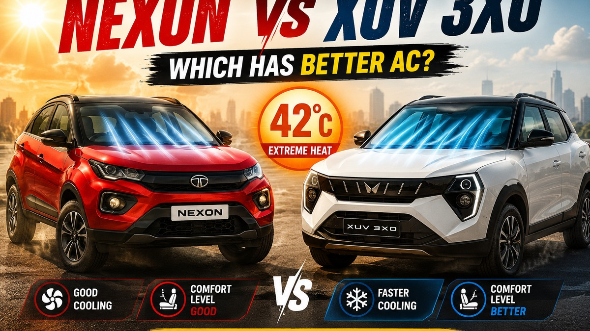
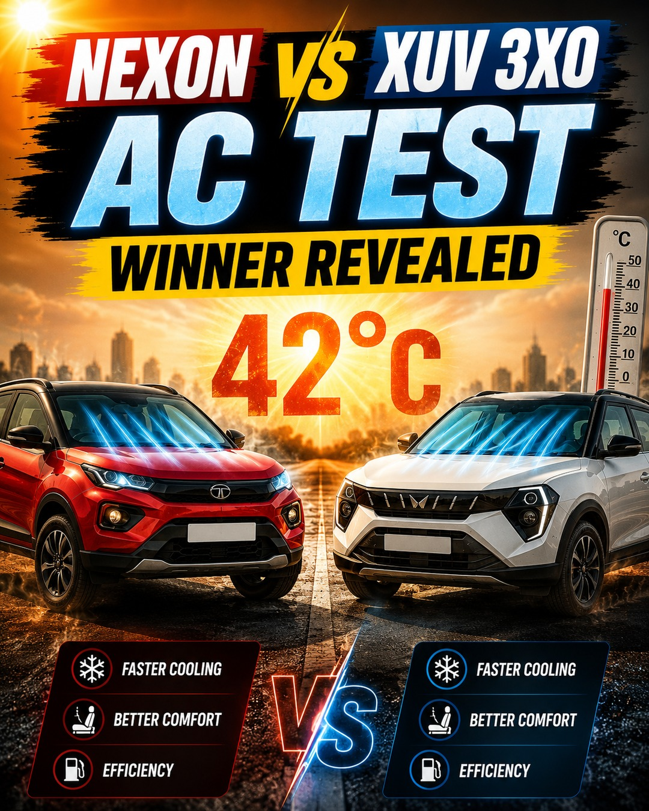

Tata Nexon vs XUV 3XO: One SUV Cools Much Faster in 42°C Heat

The Mahindra XUV 3XO has the AC cooling and cabin-comfort edge in 42°C heat, while the Tata Nexon counters with better claimed diesel mileage, bigger boot space, higher ground clearance and balanced ownership value.
The Tata Nexon and Mahindra XUV 3XO are two of India's strongest compact SUV choices, but summer heat changes the buying equation. In a 42°C cabin-comfort matchup, the XUV 3XO comes across as the faster-cooling and more comfortable SUV, while the Nexon remains a tough, efficient and well-rounded alternative.
Quick Verdict
If your daily driving happens in brutal summer conditions, the Mahindra XUV 3XO is the stronger cabin-comfort pick. Its feature set, wider cabin feel, longer wheelbase and cooling-focused equipment make it feel better prepared for city heat. The Tata Nexon still deserves serious attention because it offers better claimed diesel mileage, more boot space, higher ground clearance, a proven safety image and broader powertrain choice including petrol, diesel, CNG and EV family options.
For more SUV buying context, also read our best SUVs under Rs 15 lakh in India, best SUVs for long drives and low-maintenance cars ownership guide.
Why AC Performance Matters at 42°C
A compact SUV that looks great on paper can feel tiring if its cabin takes too long to cool after being parked in the sun. At 42°C, the test is not only about cold air from the vents. It is about how quickly the dashboard, seats, glass area, roof liner and rear-seat zone become comfortable enough for family use.
This is where the XUV 3XO gets the headline advantage in this comparison. The supplied test graphic positions it as the faster-cooling SUV with better comfort. The Nexon is not weak; it is marked as having good cooling. But in peak summer traffic, the faster-cooling cabin is the one most buyers will notice first.
AC Cooling Winner
| Category | Tata Nexon | Mahindra XUV 3XO | Winner |
|---|---|---|---|
| Initial cabin cool-down | Good cooling, but not the quicker SUV in this heat-focused matchup. | Faster cooling and better perceived comfort in the 42°C comparison. | XUV 3XO |
| Rear-seat comfort | Rear vents help, but the shorter wheelbase cabin can feel tighter. | Roomier rear-seat feel helps passengers settle faster. | XUV 3XO |
| Summer daily use | Dependable, especially if you value efficiency and rough-road stance. | More comfort-led and feature-rich for hot-city commutes. | XUV 3XO |
The sensible takeaway: buy the XUV 3XO if cooling speed and cabin comfort are high priorities. Buy the Nexon if you want a more balanced ownership package with stronger mileage credentials and a little more luggage practicality.

Price Comparison
At the time of writing, the Nexon is listed from around Rs 7.37 lakh ex-showroom, while the XUV 3XO starts from around Rs 7.54 lakh ex-showroom. Top-end prices sit in the same broad Rs 14 lakh-plus zone depending on variant, fuel type and transmission. That means this comparison is not a simple “cheaper car wins” story. The decision depends on which variant gives you the features you will use every day.
| Item | Tata Nexon | Mahindra XUV 3XO | Advantage |
|---|---|---|---|
| Starting ex-showroom price | About Rs 7.37 lakh | About Rs 7.54 lakh | Nexon |
| Top-end ex-showroom band | About Rs 14.22-14.32 lakh | About Rs 14.88 lakh | Nexon on price, XUV 3XO on equipment |
| Value sweet spot | Strong if you want diesel mileage, safety and boot space. | Strong if you want features, comfort and performance. | Depends on buyer |
Complete Specifications
| Specification | Tata Nexon | Mahindra XUV 3XO | Winner |
|---|---|---|---|
| Engine capacity | 1.2-litre turbo petrol, 1.5-litre diesel, 1.2-litre CNG options | 1.2-litre turbo petrol, 1.2-litre TGDi petrol, 1.5-litre diesel | Tie |
| Petrol power | Up to 120 PS | Up to about 130 PS | XUV 3XO |
| Petrol torque | 170 Nm | Up to 230 Nm on TGDi petrol | XUV 3XO |
| Diesel power | About 115 PS | About 117 PS | XUV 3XO, narrowly |
| Diesel torque | 260 Nm | 300 Nm | XUV 3XO |
| Claimed diesel mileage | Up to 24.08 kmpl | Up to 21.2 kmpl | Nexon |
| Claimed petrol mileage | About 17.01-17.44 kmpl depending on variant | About 18.2 kmpl in listed petrol automatic comparison data | Variant dependent |
| Fuel tank capacity | 44 litres | 42 litres | Nexon |
| Boot space | 382 litres | 364 litres | Nexon |
| Ground clearance | Up to 208 mm | 201 mm | Nexon |
| Wheelbase | 2498 mm | 2600 mm | XUV 3XO |
| Length | 3995 mm | 3990 mm | Tie |
| Width | 1804 mm | 1821 mm | XUV 3XO |
| Height | 1620 mm | 1647 mm | XUV 3XO |
| Kerb weight | Varies by fuel and transmission; third-party listings place many variants around the 1.3-tonne band | Varies by engine and transmission; broadly similar compact SUV weight class | No clear winner |
| Seat height | Commanding compact SUV seating; exact public figure varies by measurement method | Command seating position highlighted by Mahindra; exact public figure varies by measurement method | No clear winner |
Performance Comparison
The XUV 3XO has the cleaner performance win on paper. Its stronger TGDi petrol and torquier diesel give it more punch, especially when the cabin is loaded with passengers and the AC is working hard. The extra torque also helps in highway overtakes and quick gaps in city traffic.
The Nexon is not slow, but it feels more like a balanced all-rounder. Its 1.2-litre turbo petrol is adequate for daily use, and the diesel is attractive for buyers who drive long distances. The Nexon's biggest strength is not outright acceleration; it is the way it combines efficiency, ground clearance, safety image and familiar Tata SUV toughness.
Mileage and Running Cost
The Nexon diesel has a stronger claimed-mileage figure, and that matters for buyers covering 40-70 km a day. Its 44-litre tank also gives it a small range advantage. The XUV 3XO counters with stronger performance, but higher output usually asks for a little more fuel when driven hard.
For petrol buyers, the real-world difference will depend heavily on traffic, driving style, tyre pressure and AC load. In 42°C weather, any compact SUV will consume more fuel because the compressor is working longer and the cabin starts hotter.
Features and Cabin Comfort
The XUV 3XO feels more modern and comfort-heavy in the cabin. Depending on variant, it brings premium features such as dual-zone climate control, large displays, advanced driver assistance equipment and a panoramic sunroof. For a family that spends long hours in stop-go traffic, these features make the Mahindra feel more expensive than its price tag suggests.
The Nexon remains feature-rich too, with automatic climate control, rear AC vents, connected features, safety tech, premium infotainment on higher variants and a rugged driving position. It also has the advantage of multiple fuel choices. If you are open to electric alternatives, compare this with our Punch EV vs Nexon EV buyer guide and our broader Tata EV sales and Nexon/Punch analysis.
Safety and Ownership
Both SUVs have strong safety positioning, and both target family buyers who want more than just a hatchback with cladding. The Nexon has a long-standing reputation as one of India's safety-first compact SUVs. The XUV 3XO feels newer and more feature-dense, especially in variants with advanced assistance features.
Ownership-wise, the Nexon benefits from Tata's broad presence and a longer-running nameplate. The XUV 3XO benefits from Mahindra's current SUV momentum and a strong value proposition. As always, the best decision should include a test drive from the exact dealership that will service the car.
Pros and Cons
| SUV | Pros | Cons |
|---|---|---|
| Tata Nexon | Better claimed diesel mileage, higher ground clearance, bigger boot, lower starting price, strong safety image, more fuel choices. | Not the faster-cooling SUV in this 42°C comparison, lower petrol torque than XUV 3XO TGDi, rear-seat space is not as generous. |
| Mahindra XUV 3XO | Faster AC cooling verdict, more powerful engine options, more torque, wider and taller cabin feel, longer wheelbase, premium features. | Higher top-end price, smaller boot, lower claimed diesel mileage, slightly lower ground clearance than Nexon. |
Category Winners
| Category | Winner | Why |
|---|---|---|
| Best AC Cooling | Mahindra XUV 3XO | It is the faster-cooling SUV in the 42°C comparison graphic and feels more comfort-focused. |
| Best Performance | Mahindra XUV 3XO | Stronger petrol and diesel torque figures give it the edge. |
| Best Mileage | Tata Nexon | The Nexon diesel's claimed mileage is higher. |
| Best Features | Mahindra XUV 3XO | It offers a more premium feature mix in higher trims. |
| Best Value for Money | Split decision | Nexon for efficient ownership; XUV 3XO for feature value. |
| Best Design | Buyer preference | Nexon looks sharper and sportier; XUV 3XO looks more upright and premium. |
| Best for Daily Use | Mahindra XUV 3XO | The faster cooling and roomier feel make it easier to live with in hot city conditions. |
Which SUV Should You Buy?
Buy the Mahindra XUV 3XO if you want quicker cabin cooling, stronger performance, a more premium feature list and a better rear-seat comfort impression. It is the better pick for families in very hot cities where AC performance matters every single day.
Buy the Tata Nexon if you want stronger claimed fuel economy, more boot space, higher ground clearance, a lower starting price and a proven compact SUV image. It is the smarter pick for buyers who prioritise running cost, rough-road confidence and long-term familiarity over outright cooling-speed bragging rights.
Final Recommendation
The XUV 3XO wins this comparison because the title question is about cooling quickly in 42°C heat, and that is exactly where it pulls ahead. But the Nexon is still the more rational all-round choice for many Indian buyers. The final call is simple: choose XUV 3XO for comfort, performance and features; choose Nexon for efficiency, clearance, boot space and balanced ownership.
FAQs
Which cools faster, Tata Nexon or Mahindra XUV 3XO?
In this 42°C heat-focused comparison, the Mahindra XUV 3XO is positioned as the faster-cooling SUV, while the Tata Nexon is still rated as having good cooling.
Which is more powerful?
The Mahindra XUV 3XO has the advantage, especially with its stronger TGDi petrol and torquier diesel options.
Which has better mileage?
The Tata Nexon diesel has the stronger claimed mileage figure, making it attractive for high-running buyers.
Which SUV is better for family use?
The XUV 3XO is better if rear-seat comfort, features and cooling matter most. The Nexon is better if boot space, ground clearance and efficiency are higher priorities.
Related Reading
For more context, compare this story with Mahindra SUV Output Crunch: What XUV 7XO and Thar Buyers Should Watch Now and ST's New Battery Tech Could Give EV Makers a Major Advantage and Top 5 Most Affordable 7-Seater Diesel SUVs in India in 2026: Best Value Family SUVs Ranked and Mitsubishi Pajero Revival Confirmed: A New Challenge for the Fortuner.